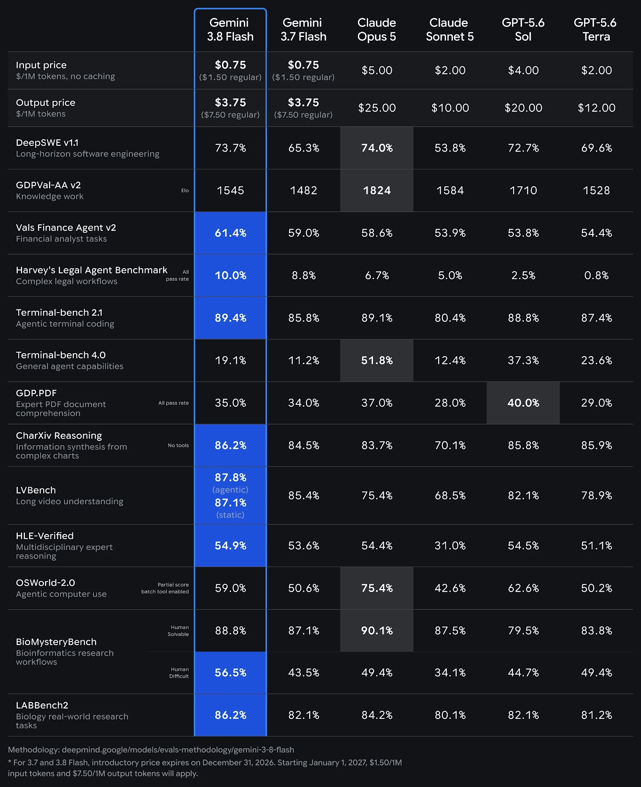

GOOGLE DEEPMIND · GEMINI MAINLINE · 2026-09-02
Gemini3.8 Flash
依托 3.7 Flash，在相同 1M context 和 Flash 经济性下，集中抬升软件工程、终端 agent、computer use 与研究工作流。
1M input64K outputAdjustable effortText · Image · Audio · Video

Where the gain lands
Benchmark3.83.7
DeepSWE v1.173.765.3
Terminal-bench 4.019.111.2
Vals Finance Agent v261.459.0
LABBench286.282.1
增益不是只落在知识题，而是同时落在 coding、terminal、computer use 和专业研究轨迹。
Agent deployment lens
- 不同 effort 下测成功率—成本—延迟 Pareto frontier
- 记录工具调用、失败恢复和超时，而不只看最终答案
- 价格必须转成 cost per successful task
- 多语言 safety 必须单独回归
Flash 的核心不是“便宜的问答”，而是“可规模化的 agent execution”。
Evidence boundary
这是 Model Card，不是完整 Tech Report。 参数规模、训练数据配比、post-training recipe 和消融实验未公开。官方同时明确披露多语言安全小幅回归，不应被总体能力增长掩盖。